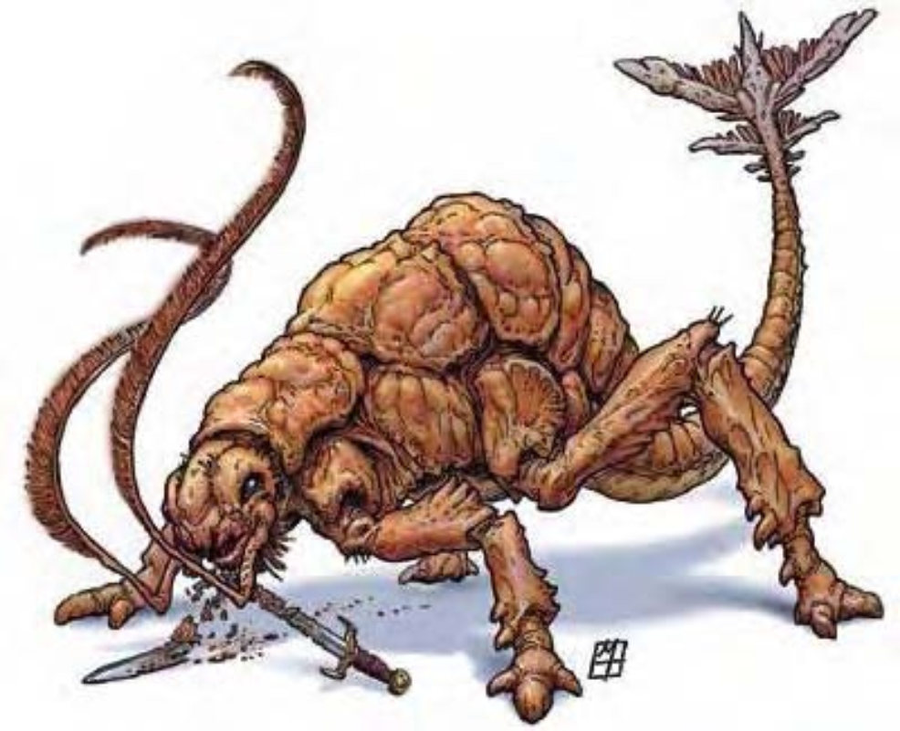

这种生物体型大小约与矮种马相当，有四只虫足，佝偻蹲踞的身体由一层瘤状厚皮保护。尾巴布满护甲，尾端的骨质突出物形状像是双头桨。头顶突变出两根长长的触毛，每只眼睛下方各一。
大部分战士都宁愿去对付兽人大军，也不想遇上锈蚀怪。这种生物会腐蚀金属物体并以此为食，已经让无数冒险者的防具、盾牌及武器受害。
这种生物底部的皮色为茶黄色，背部则是锈红色。自然盘卷的触毛接触到金属时即可将之锈蚀。
一般的锈蚀怪约5英尺长、3英尺高、重200磅。
| 资料栏位 | 锈蚀怪 (Rust Monster) 中型异怪 |
| 生命骰 | 5d8+5 (27HP) |
| 先攻 | +3 |
| 速度 | 40英尺 (8格) |
| 防御等级 | 18 (+3敏捷、+5天生)、接触13、措手不及15 |
| 基本攻击/擒抱 | +3 / +3 |
| 攻击 | 触毛接触+3近战 (锈蚀) |
| 全力攻击 | 触毛接触+3近战 (锈蚀) 及 啮咬-2近战 (1d3) |
| 占据/触及 | 5英尺 / 5英尺 |
| 特殊攻击 | 锈蚀 |
| 特殊能力 | 黑暗视觉、灵敏嗅觉 |
| 豁免 | 强韧+2、反射+4、意志+5 |
| 属性 | 力量10、敏捷17、体质13、智力2、感知13、魅力8 |
| 技能 | 聆听+7、侦察+7 |
| 专长 | 警觉、追踪 |
| 环境 | 地底 |
| 组织 | 单独或成双 |
| 宝藏 | 无 |
| 阵营 | 总是绝对中立 |
| 进化 | 6-8HD (中型)；9-15HD (大型) |
| 等级修正值 | ― |
锈蚀怪在90英尺外就可以嗅到金属物体。一旦发现金属源，他会狂奔而去，用触毛进行攻击。这种生物毫不容情，只要有人持有完整的金属物体，锈蚀怪可以追着他跑很长一段距离，在吞食新锈的金属材料时才会停止战斗。聪明或走投无路的人物通常会抛出金属物体，让饥饿的锈蚀怪分心，趁他进食时逃跑。
锈蚀怪会先以最大的金属物品为目标，先攻击防具，接着才是盾牌等较小物品。他们偏好含铁质（例如铁或钢），而不喜贵重金属（像是金、银），但有进食机会时，也不会过于挑食。
锈蚀 (特异)：锈蚀怪若利用触毛接触攻击成功，则可让目标金属腐蚀，立刻碎裂无法使用。这种接触攻击可立即摧毁10英尺立方的金属。魔法武器、防具与其他金属制魔法物品必须通过反射检定 (DC=17)，否则就被溶解。豁免检定DC的调整值与体质调整值相同，并包含+4种族加值。
对锈蚀怪造成伤害的金属武器会马上腐蚀。木制、石制及其他非金属武器不受影响。